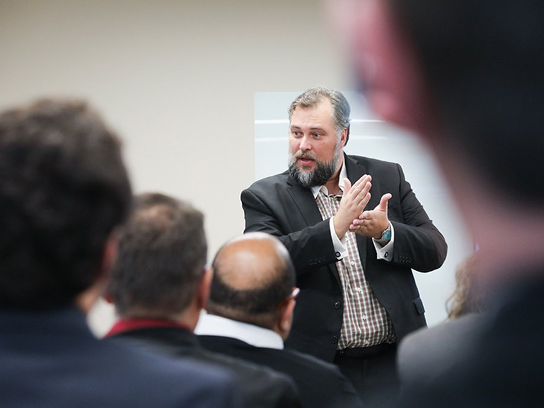

Linha temática
Organizações, liderança e cultura
Escolha uma abordagem para o seu evento.
Palestras disponíveis
01
Humanização não é gentileza
O que diferencia boa intenção, ação humanizada e transformação sistêmica.
02
O que está adoecendo sua empresa e ninguém está medindo?
Saúde mental no trabalho como questão de estrutura, não apenas de indivíduo.
03
Sua liderança produz confiança ou apenas obediência?
Autoridade, vínculo, limites e desenvolvimento sem paternalismo.
04
Cultura organizacional: o que o ambiente ensina todos os dias?
Como regras, símbolos e exemplos cotidianos moldam decisões e relações.
05
Ética sob pressão: quem somos quando as escolhas importam?
Integridade, personalidade e tomada de decisão em situações reais.